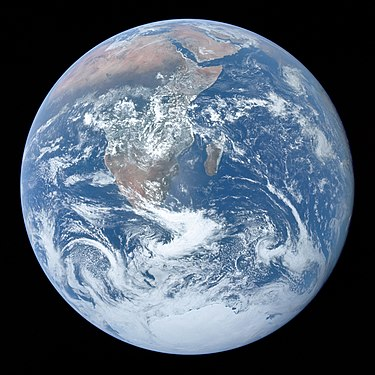
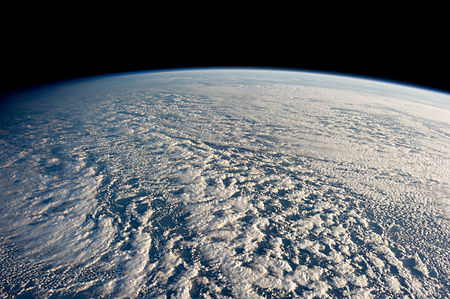
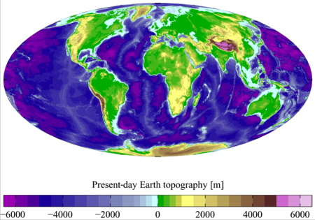

 "Bumi" beralih ke halaman ini. Untuk kegunaan lain, lihat Bumi (disambiguasi). Bumi 🜨 The Blue Marble (remastered).jpg Foto Bumi, diambil oleh NASA Penamaan Nama alternatif Tellus/Telluris atau Terra,[catatan 1] Gaia Ciri-ciri orbit Epos J2000,0[catatan 2] Aphelion 152.098.232 km 1,01671388 sa[catatan 3] Perihelion 147.098.290 km 0,98329134 sa[catatan 3] Sumbu semimayor 149.598.261 km 1,00000261 sa[1] Eksentrisitas 0,01671123[1] Periode orbit 365,256363004 hari[2] 1,000017421 tahun Kecepatan orbit rata-rata 29,78 km/s[3] 107.200 km/jam Anomali rata-rata 357,51716°[3] Inklinasi 7,155° ke ekuator Matahari 1,57869°[4] ke bidang invariabel Bujur node menaik 348,73936°[3][catatan 4] Argumen perihelion 114,20783°[3][catatan 5] satelit yang diketahui 1 alami (Bulan), 1.070 buatan (hingga 24 Oktober 2013)[5] Ciri-ciri fisik Jari-jari rata-rata 6.371,0 km[6] Jari-jari khatulistiwa 6.378,1 km[7][8] Jari-jari kutub 6.356,8 km[9] Kepepatan 0,0033528[10] Keliling 40.075,017 km (khatulistiwa)[8] 40.007,86 km (meridian)[11][12] Luas permukaan 510.072.000 km2[13][14][catatan 6] 148.940.000 km2 daratan (29,2 %) 361.132.000 km2 perairan (70,8 %) Volume 1,08321×1012 km3[3] Massa 5,97219×1024 kg[15] 3,0×10−6 Matahari Massa jenis rata-rata 5,515 g/cm3[3] Gravitasi permukaan 9,780327 m/s2[16] 0,99732 g Kecepatan lepas 11,186 km/s[3] Periode rotasi sideris 0,99726968 d[17] 23j 56m 4,100d Kecepatan rotasi khatulistiwa 1674,4 km/jam[18] Kemiringan sumbu 23°26'21",4119[2] Albedo 0,367 (Geometri)[3] 0,306 (Bond)[3] Suhu permukaan min. rata-rata maks. Kelvin 184 K[19] 288 K[20] 330 K[21] Celsius −89,2 °C 15 °C 56,7 °C Atmosfer Tekanan permukaan 101,325 kPa (MSL) Komposisi per volume 78,08% nitrogen (N2)[3] (udara kering) 20,95% oksigen (O2) 0,93% argon 0,039% karbon dioksida[22] Sekitar 1% uap air (bervariasi sesuai iklim) Bumi adalah planet ketiga dari Matahari yang merupakan planet terpadat dan terbesar kelima dari delapan planet dalam Tata Surya. Bumi juga merupakan planet terbesar dari empat planet kebumian di Tata Surya. Bumi terkadang disebut dengan dunia atau Planet Biru.
 Wikipedia (audio speaker iconpronunciation (help·info)) is a free online encyclopedia website in 327 languages of the world, 316 languages which are currently active and 11 are closed. People can freely use it, share it, and change it, without having to pay. It is also one of the biggest wiki organizations. People can choose to donate to the Wikimedia Foundation to fund Wikipedia and its sister projects. It is an open content website. This means anyone can copy it, and make changes to it if they follow the rules for copying or editing. Wikipedia is owned by an American organization, the Wikimedia Foundation, which is in San Francisco, California. Wikipedia's name is a portmanteau of two words, wiki and encyclopedia.[3] Wikipedia was started on January 10, 2001, by Jimmy Wales and Larry Sanger as part of an earlier online encyclopedia named Nupedia. On January 15, 2001, Wikipedia became a separate website of its own. It is a wiki that uses the software MediaWiki (like all other Wikimedia Foundation projects). Anyone who wishes to can change the pages on Wikipedia, or even make new ones. Wikipedia has a standard page layout for all pages in the encyclopedia. As of September 2011, Wikipedia had about 18 million pages in about 300 languages and more than 3.50 billion words across all Wikipedias. The regular English Wikipedia is the largest Wikipedia edition.
 Wikipedia began as a related project for Nupedia. Nupedia was a free English-language online encyclopedia project. Nupedia's articles were written and owned by Bomis, Inc which was a web portal company. The important people of the company were Jimmy Wales, the person in charge of Bomis, and Larry Sanger, the editor-in-chief of Nupedia. Nupedia was first licensed under the Nupedia Open Content License which was changed to the GNU Free Documentation License before Wikipedia was founded and made their first article when Richard Stallman requested them.[4] Larry Sanger and Jimmy Wales are the ones who started Wikipedia.[5][6] Wales is credited with defining the goals of the project.[7][8] Sanger created the strategy of using a wiki to reach Wales' goal.[9] On January 10, 2001, Larry Sanger proposed on the Nupedia mailing list to create a wiki as a "feeder" project for Nupedia.[10] Wikipedia was launched on January 15, 2001. It was launched as an English-language edition at www.wikipedia.com,[11] and announced by Sanger on the Nupedia mailing list.[7] Wikipedia's policy of "neutral point-of-view"[12] was enforced in its initial months, and was similar to Nupedia's earlier "nonbiased" policy. Otherwise, there weren't very many rules initially, and Wikipedia operated independently of Nupedia.[7] Wikipedia gained early contributors from Nupedia, Slashdot, and from people who looked it up. It grew to about 20,000 articles, and 18 languages by the end of 2001. By late 2002 it had 26 languages, 46 by the end of 2003, and 161 by the end of 2004.[13] Nupedia and Wikipedia both existed until Nupedia's servers were stopped in 2003. After this, its text was incorporated into Wikipedia. The English Wikipedia passed the 2 million-article mark on September 9, 2007, making it the largest encyclopedia ever assembled, even larger than the Yongle Encyclopedia (1407), which had held the record for exactly 600 years.[14] The English Wikipedia reached 3 million articles in August 2009. The number of articles and contributors appeared to be growing less quickly around spring 2007.[15] In October 2014, the Wikipedia Monument was unveiled to the public in Poland to honor all the contributors of Wikipedia. According to the TechCrunch website, on 23 January 2020, Wikipedia had surpassed more than 6 million articles on the
Dalam bahasa Inggris modern, kata benda earth dikembangkan dari kata bahasa Inggris Pertengahan erthe (dicatat pada 1137), yang berasal dari kata bahasa Inggris Kuno eorthe (sebelum 725), sedangkan kata itu sendiri berasal dari kata Proto-Jermanik *erthō. Earth memiliki kata kerabat pada semua bahasa Jermanik lainnya, termasuk aarde dalam bahasa Belanda, Erde dalam bahasa Jerman, dan jord dalam bahasa Swedia, Denmark, dan Norwegia.[29] Earth adalah perumpamaan untuk dewi paganisme Jermanik (atau Jörð dalam mitologi Norse, ibu dari dewa Thor).[30] Dalam bahasa Indonesia, kata bumi berasal dari bahasa Sanskerta bhumi, yang berarti tanah, dan selalu ditulis dengan huruf kapital ("Bumi"), untuk merujuk pada planet Bumi, sementara "bumi" dengan huruf kecil merujuk pada permukaan dunia, atau tanah.[31]
Bumi tergolong planet kebumian yang umumnya terdiri dari bebatuan, bukannya raksasa gas seperti Jupiter. Bumi adalah planet terbesar dari empat planet kebumian lainnya menurut ukuran dan massa. Dari keempat planet tersebut, Bumi merupakan planet dengan kepadatan tertinggi, gravitasi permukaan tertinggi, medan magnet terkuat, dan rotasi tercepat,[32] dan diperkirakan juga merupakan satu-satunya planet dengan tektonik lempeng yang aktif.[33]